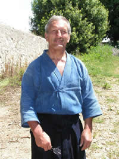
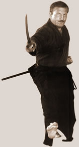
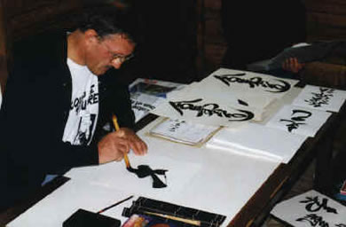

Pascal Krieger 1945. április 9.-én született La Tour-de-Peilz-ben, amely a svájci Vaud kantonban található. 1960-ban, miután elvégezte iskolai tanulmányait a St-Maurice-i Fehér Atyáknál, tipográfus-szerkesztõnek tanul. Ebben az idõszakban találkozik elõször a Budoval. 1963-ban kezdi el a Judo gyakorlását. 1966-ban, Genfben telepszik le. 1968-ban kapja meg az elsõ dant. Még ugyanebben az évben tengeri úton Japánba indul. Az edzést a Kodokan-ban, és a Meiji Egyetemen folytatja. 1969-ben ismerkedik meg Donn F. Draeger Senseijel, aki bemutatja Shimizu Takaji nagymesternek. Ekkor kapja az elsõ Jodo leckét. Kevéssel késõbb találkozik Kuroda Ichitaro Senseijel, akinél az Iaido és Shodo (kalligráfia) tanulmányait kezdi meg. 1971-ben visszatér Svájcba egy rövid idõre, ekkor 2. danos Judo-ból, 1. danos Jodo-ból, 1. danos Iaido-ból és 1. danos Shodo-ból. Miután elindította egy Jodo és Iaido csoport munkáját Genfben, Chicagóba utazik, hogy Draeger Senseit segítse egy harcmûvészeti magazin létrehozásában. 1972-ben Hong Kongba utazik, hogy Draeger Senseit tovább segítse "Martial Arts International” cím alatt kiadásra kerülõ magazinnak a népszerûsítésében. Azonban az olajválság lehetetlenné teszi ezt a vállalkozást, és P. Krieger visszatér Japánba, hogy folytassa a Budo tanulmányozását. 1976-ban visszatér Genfbe, immár 3. dannal Judo-ból, 3. dannal és Oku-iri-ként Jodoból és 3. dannal Iaido-ból.  1977-ben megalapítja a Svájci Jodo szövetséget, valamint a Svájci Iaido szövetséget. 1978-ban találkozik Malcolm Tiki Shewan-nal, akinek a hatására tovább mélyíti Iaido és Kenjutsu gyakorlását. 1979-ben megalapítja az Európai Jodo szövetséget. Ugyanebben az évben Draeger Sensei mellett segédkezik az elsõ International Jodo Jamboree-n Malajziában. 1980-ban õ kezdeményezi Otake Risuke nagymester meghívását Európába, aki a Tenshin Shoden Katori Shinto Ryu iskolát képviseli, Donn Draeger-rel és Kaminoda Tsunemori-val, akik a Shindo Muso Ryu iskolát képviselik. Ez az esemény meghatározó volt a Jodo európai elterjedésének szempontjából. 1982-ben ismét Malajziában tanít, a második International Jodo Jamboree alkalmával. 1984-ben megkapja a 4. dant Jodo-ból. 1985-ben ismét Japánba utazik, hogy a Kusarigamajutsu gyakorlását tanulmányozza Kaminoda Tsunemori mellett. Részt vesz a 3. International Jodo Jamboree-n Malajziában. 1987-ben megkapja a Shomokuroku-t Jodo-ból. A következõ évben megszervezi a 4. International Jodo Jamboree-t Svájcban. 1989-ben adja ki kétnyelvû (angol-francia) könyvét a Shindo Muso Ryu Jodo-ról Jodo, la voie du bâton/The Way of the Stick” (Jodo, a bot útja) címmel. 1991-ben az 5. International Jodo Jamboree-n tanít Malajziában. A 6. International Jodo Jamboree során, Hawaiion találkozik Nishioka Tsuneo-val, akivel folytatja a Jodo tanulmányozását. Ekkor kapja meg a Gomokuruku-t. 1995-ben meghívja Nishioka Senseit Európába, többek között Genfbe.  1996-ban megkapja a 10. dant Shodo-ból. 1997 tavaszán Nishioka Senseitõl személyesen veheti át a Menkyo Kaiden-t Shinto Muso Ryu Jodo-ból. Ugyanebben az évben a 7. International Jodo Jamboree-n tanít Ausztráliában. Shimizu Takaji Sensei kérésére, amelyet halála elõtt intézett hozzá 1978-ban, õ felel a Shindo Muso Ryu Jodo fejlõdéséért Európában. A Shun Do Kwan Dojó-ban, Judo-t, Jodo-t, Iaido-t, Kenjutsu-t és Shodó-t oktat. A következõ email címen lehet õt elérni: krieger@iso.ch |
|
| Tenjinchi Dojo | EBR International | Raji Ukemi Fitness | Aikido | Jodo | Iaido | Gyerekcsoport | Órarend | Tanárok Hírek/Események | Fotók / Videók | Olvasnivaló | Linkek |